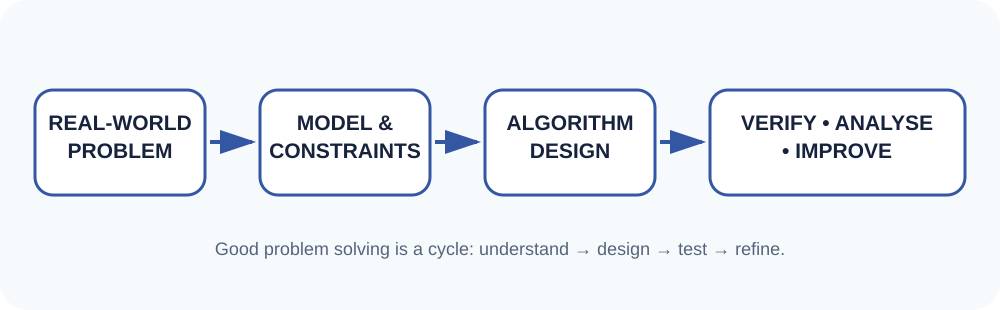
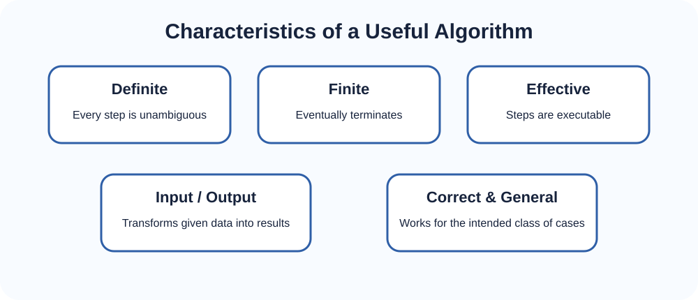
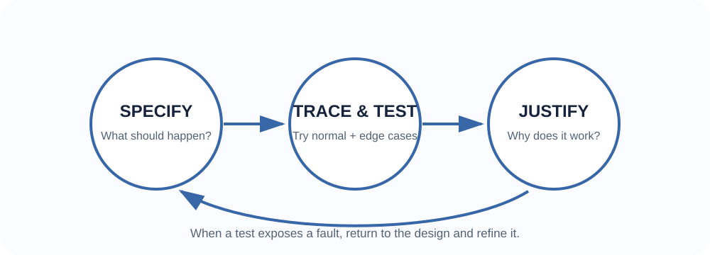
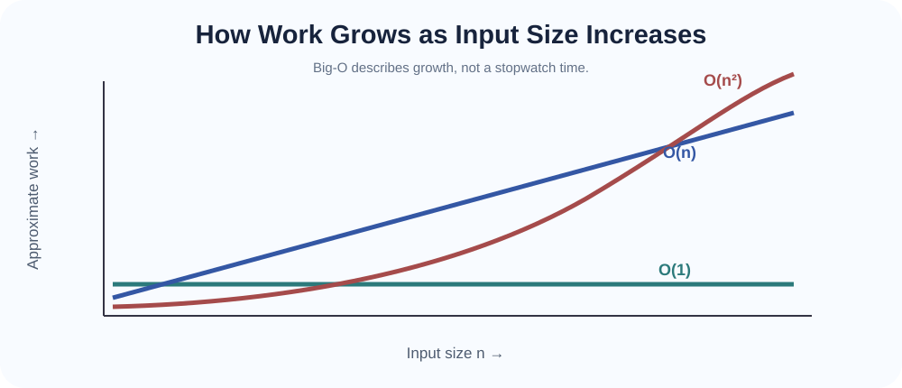

From a real problem to a precise, testable and efficient procedure.
A computer programme is only one possible expression of a solution. Before writing code, a problem solver must understand what is being solved, what information is available, what result is required, what constraints exist and how success will be recognised. A beautifully written programme that solves the wrong problem is still a failed solution.
In computer science, problem solving is the process of transforming a vague real-world need into a sequence of clear decisions and operations that can be carried out reliably. This is especially important in data science and artificial intelligence, where the same task can often be approached in several ways and the choice of representation and procedure affects speed, memory use, accuracy and maintainability.

An algorithm is a finite, well-defined sequence of steps for solving a class of problems or carrying out a computation. The idea is broader than programming: an algorithm can first be expressed in ordinary language, a flowchart, pseudocode or mathematical notation and later implemented in a programming language.
The word algorithm is historically associated with the Latinised name of the Persian mathematician Muḥammad ibn Mūsā al-Khwārizmī, whose works helped transmit systematic methods of calculation. Modern computer science extends this general idea: a procedure should be precise enough that its steps can be followed consistently.

| Algorithm | Programme |
|---|---|
| A language-independent procedure or method. | An implementation written in a programming language. |
| Focuses on logic and steps. | Includes syntax, data types, libraries and machine-specific details. |
| Can be expressed using pseudocode or diagrams. | Must obey the rules of the chosen programming language. |
This distinction matters because good algorithmic thinking lets you reason about a solution before implementation details distract you.
Solution design is the process of organising the reasoning that connects the problem to an implementable procedure. A common mistake is to start coding immediately. A stronger approach is to first create an abstract plan.
Suppose the values are [4, 9, 2, 7, 5]. A human can see that 9 is the largest. But a computer must be given a repeatable procedure that also works for thousands or millions of values.
One useful idea is to keep a current maximum. Begin with the first item as the best candidate seen so far. Compare every later item with it. If a larger value is found, replace the current maximum. At the end, the remembered value is the largest.
ALGORITHM FindMaximum(A)
maximum ← A[0]
FOR each remaining value x in A
IF x > maximum
maximum ← x
RETURN maximumNotice the important progression: the problem came first, then the idea of “remember the best seen so far”, and only after that did we write pseudocode.
Large problems become manageable when divided into smaller subproblems. For example, a student-results system may need to read scores, validate them, compute totals, assign classifications, sort records and generate a report. Each subproblem can be designed and verified separately before the pieces are combined.
Experienced problem solvers recognise recurring patterns. “Keep the best item seen so far” appears in maximum/minimum problems. “Repeat until the target is found” appears in search problems. “Divide a problem into smaller instances” appears in recursive algorithms and divide-and-conquer methods. Recognising a pattern reduces the amount of reasoning needed for a new problem.
There is no single mandatory representation. The best representation depends on the audience and the stage of design.
| Representation | Useful when… | Limitation |
|---|---|---|
| Natural language | Explaining an idea to beginners or non-programmers. | Can become ambiguous. |
| Flowchart | Showing decisions and control flow visually. | Large algorithms can become cluttered. |
| Pseudocode | Expressing logic precisely without programming syntax. | Conventions vary. |
| Programme code | Executing and testing the solution on a computer. | Implementation details can hide the main idea. |
An algorithm should not merely produce the correct answer for one example. We need confidence that it produces the correct result for the whole class of valid inputs for which it was designed.

A specification states what a procedure should accomplish. A useful informal specification has a precondition and a postcondition. For binary search, for example, a precondition is that the data must already be sorted. The postcondition states what is returned when the target exists or does not exist.
A trace follows the algorithm one step at a time and records important state changes. Tracing is especially useful before coding because it exposes missing steps and incorrect assumptions.
Good test cases are chosen deliberately. Use:
Passing several tests increases confidence but does not prove that every possible case is correct. For important algorithms, reasoning about an invariant can help. An invariant is a statement that remains true throughout a repeated process. In the maximum-finding algorithm, after each comparison, the variable maximum stores the largest value among all elements examined so far. When every element has been examined, this invariant explains why the final result is the maximum of the whole array.
Different problems favour different strategies. At this stage we focus on recognising the ideas; later topics will develop them formally.
Try a direct or exhaustive approach. It may be simple and reliable but can become expensive for large inputs.
Split the problem into smaller parts, solve them and combine the results. Merge sort and quicksort will later use this idea.
Solve a smaller version of the problem and extend the result. Binary search repeatedly reduces the search space.
Make a locally attractive choice at each step. This is useful for some optimisation problems but does not always produce a global optimum.
Build a candidate solution, undo a choice when it cannot lead to success, and try another path.
Change the representation or organisation of data so the problem becomes easier to solve.
Two algorithms may produce exactly the same correct answer but require very different amounts of time or memory. With five values, the difference may be invisible. With five million values, it may determine whether a system responds immediately or takes hours.
Instead of relying only on seconds measured on one computer, algorithm analysis studies how the required work grows as the input size n grows. This gives us a machine-independent way to compare the shape of growth.

| Growth | Intuition | Example idea |
|---|---|---|
| O(1) | Work remains roughly constant even when the input grows. | Access an array item by a known index. |
| O(n) | Work grows roughly in proportion to the number of items. | Scan every item once to find a maximum. |
| O(n²) | Work can grow like all-pairs comparisons. | A nested loop comparing many pairs. |
Important: Big-O is not “how many seconds the algorithm takes”. It describes the long-run growth of resource use as the input grows. We will study time and space complexity, best/worst/average cases, searching and sorting much more deeply later.
Time complexity estimates how the number of basic operations grows with input size. Space complexity estimates how extra memory requirements grow. Sometimes an algorithm saves time by using more memory, or saves memory by doing more work. Choosing an algorithm therefore involves trade-offs.
A major theme of IS 237 is:
A data structure determines how information is organised; an algorithm determines the operations performed on it. The best algorithm can depend on the data structure, and the best data structure can depend on the operations that are most important. This is why the rest of the course alternates between structures and the algorithms that use them.